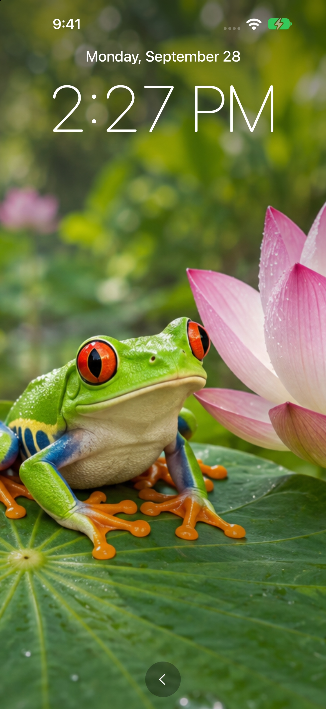

01 / CAPTURAR
Vídeo con el sonido que tú elijas
Graba con la cámara frontal o trasera. Elige objetivos gran angular o ultra gran angular cuando sean compatibles, ajusta el zoom y activa o desactiva el audio del micrófono.
VÍDEO · AUDIO · RELOJ CON FOTO
Grabación de vídeo y audio para iPhone y iPad, con un reloj con foto personal y una biblioteca de clips que tú controlas.
iOS 17+ · iPhone y iPad · 29 opciones de idioma
El vídeo requiere mantener la aplicación abierta. Para grabar el micrófono con el dispositivo bloqueado, elige Audio con pantalla bloqueada.

MÁS DE CERCA
01 / CAPTURAR
Graba con la cámara frontal o trasera. Elige objetivos gran angular o ultra gran angular cuando sean compatibles, ajusta el zoom y activa o desactiva el audio del micrófono.
02 / ESCUCHAR
Elige Audio con pantalla bloqueada para grabar el micrófono y después bloquea el dispositivo. Guarda los clips de solo audio como archivos M4A.
03 / MOSTRAR
Muestra tu foto favorita con la hora y la fecha, usa la escena de naturaleza incluida o reproduce en bucle un vídeo importado. También puedes usar una pantalla de monitorización atenuada durante la grabación de vídeo.
04 / SEGUIR GRABANDO
Establece una duración máxima o un tamaño de archivo para los vídeos. Con la grabación en bucle activada, se inicia un clip nuevo al alcanzar el límite y se eliminan las antiguas grabaciones locales que cumplan los criterios para respetar el espacio de almacenamiento asignado.
05 / ORGANIZAR
Reproduce, cambia el nombre, comparte y elimina tus grabaciones. La fecha, la hora y la duración permiten identificar fácilmente los clips. Elige una carpeta en Archivos para recibir una copia de cada grabación nueva.
06 / PRIVACIDAD
La aplicación no incluye cuentas, anuncios ni análisis de uso. Las grabaciones permanecen en tu dispositivo salvo que las exportes o compartas. Las copias de seguridad y las carpetas en la nube siguen los ajustes de tu proveedor.
ESTAMOS PARA AYUDARTE
Primeros pasos, guardado de clips y modos de grabación.
Contactar con soporte ↗En Monitor, elige Vídeo o Audio con pantalla bloqueada y pulsa Iniciar grabación. Permite el acceso a la cámara o al micrófono cuando se solicite. Para un vídeo sin sonido, desactiva Grabar audio del micrófono antes de empezar. Pulsa Detener y guardar grabación al terminar.
Para grabar vídeo, mantén DogKona abierto y el dispositivo desbloqueado. Bloquear el dispositivo o salir de la aplicación guarda y finaliza el clip. La pantalla atenuada y el reloj con foto son vistas internas de la aplicación y no cambian este requisito. Usa Audio con pantalla bloqueada si solo necesitas el micrófono mientras el dispositivo está bloqueado. Las llamadas, las interrupciones o la falta de espacio pueden finalizar la grabación.
Antes de grabar, elige una foto o un vídeo en la tarjeta Reloj con foto de Monitor. Mostrar reloj presenta la foto con la hora y la fecha; Foto + reloj la abre durante la grabación de vídeo. Reproducir vídeo repite un vídeo importado sin reloj. El sonido de reproducción es independiente de Grabar audio del micrófono; el micrófono puede captar el sonido del altavoz. Vuelve con la flecha inferior. El reloj con foto atenúa la pantalla; los fondos de vídeo usan el brillo normal.
La grabación en bucle está desactivada por defecto. En Ajustes, elige los límites de los clips y el espacio total de almacenamiento de vídeo y activa Grabación en bucle. DogKona puede eliminar permanentemente vídeos locales antiguos antes de iniciar un clip para reservar espacio. Se conservan el último vídeo completado y los archivos de audio. Las copias exportadas no se ven afectadas. Puede haber una breve pausa entre clips; detener, salir de la aplicación o una interrupción finaliza el bucle.
Abre Grabaciones para reproducir, renombrar, compartir o eliminar un clip. En Ajustes → Carpeta de guardado → Elegir carpeta…, selecciona un destino para las copias de grabaciones nuevas. Los clips existentes no se mueven. Mantén DogKona abierto hasta que desaparezca «Guardando copia en la carpeta…». Si falla la copia, la grabación local permanece y el bucle se detiene. Los cambios de nombre y las eliminaciones locales no modifican las copias exportadas.
Sí. Cambiar entre la cámara frontal y trasera o entre objetivos físicos guarda el clip actual e inicia otro tras una breve pausa. El zoom se ajusta dentro del mismo clip. Los objetivos y el zoom disponibles dependen del dispositivo. Cada clip conserva la orientación elegida al iniciar su grabación.
Abre los ajustes del dispositivo, busca DogKona y activa el permiso necesario. El vídeo sin sonido no necesita acceso al micrófono. Si la grabación se detiene inesperadamente, comprueba el espacio libre y si hubo una llamada, un bloqueo del dispositivo u otra interrupción.
Esta guía se aplica a DogKona para iPhone y iPad con iOS 17 o posterior, en vertical u horizontal. La aplicación ofrece 29 opciones de idioma y usa el idioma del dispositivo si es compatible. Abre Ajustes → Idioma → Cambiar idioma… para elegir el idioma de la aplicación. Detén la grabación antes de cambiarlo.
Elimina clips individuales en Grabaciones. Desinstalar DogKona elimina sus datos locales. Gestiona los archivos exportados, las copias compartidas y las copias de seguridad por separado en sus destinos. No se necesita una cuenta de DogKona.
SOPORTE DE DOGKONA
Para preguntas, errores o sugerencias, contacta con raisecheckfold.com. Incluye el modelo del dispositivo, la versión de iOS y lo ocurrido.
Evita enviar grabaciones privadas salvo que sean necesarias para explicar el problema.